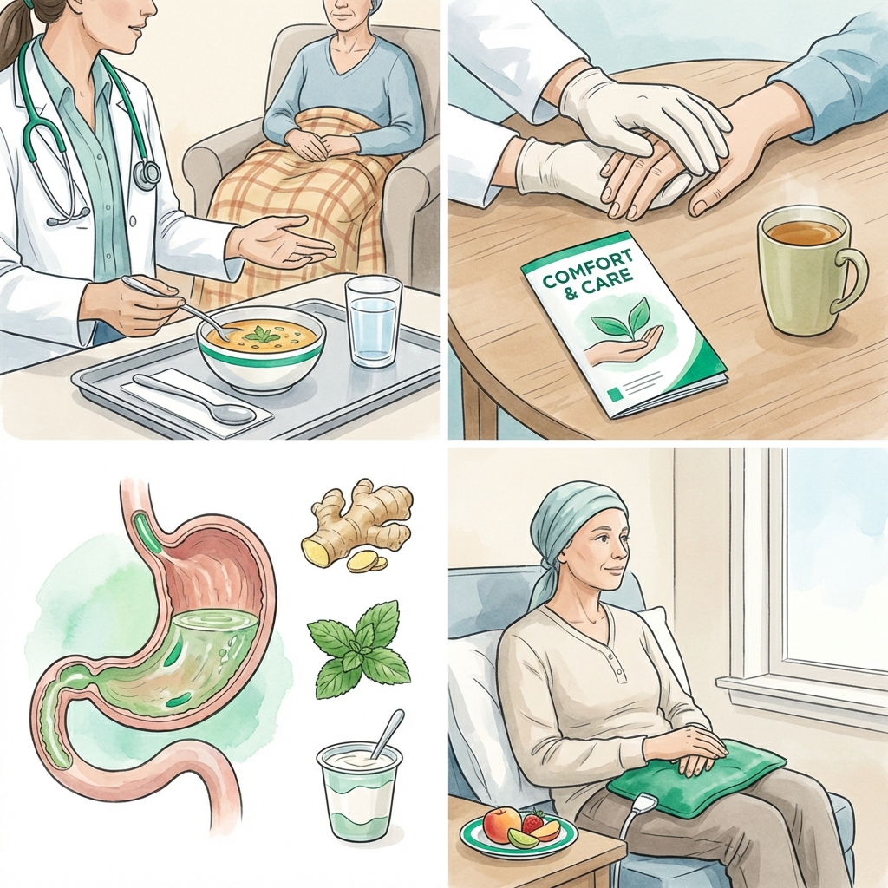
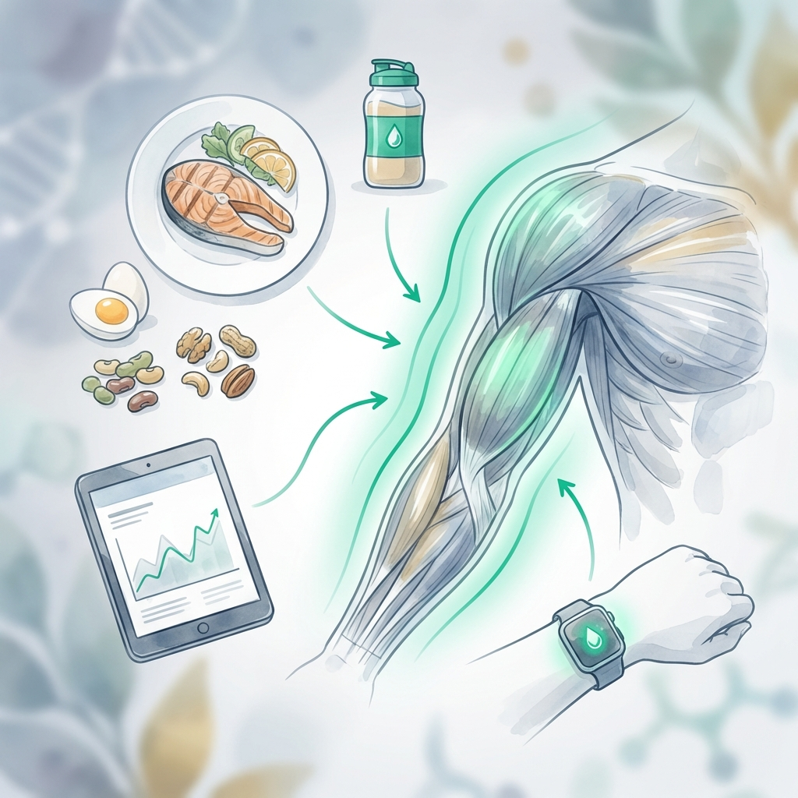

Nutrición Clínica Especializada para Pacientes con Cáncer
Intervención de soporte nutricional para mejorar la tolerancia al tratamiento oncológico y preservar la calidad de vida y el estado nutricional.
El tratamiento oncológico impone un desafío metabólico y físico único. No se trata solo de "comer bien", sino de gestionar los efectos secundarios que dificultan la alimentación justo cuando tu cuerpo más la necesita.
En Clínica Denki, nos enfocamos en protocolos de nutrición clínica que mitigan las náuseas, protegen la masa muscular y aseguran que tu organismo tenga la fuerza necesaria para completar su esquema de tratamiento.
Áreas de Soporte Nutricional
Intervención clínica adaptada a tu tipo de tratamiento.
Nutrición en Cáncer
Planes personalizados según el tipo de tumor y fase de tratamiento (quimio/radio).
Ver Servicio
Manejo de Síntomas
Intervención para náuseas, falta de apetito y alteraciones del gusto.
Más Información
Masa Muscular
Prevención de la caquexia y fortalecimiento mediante nutrición técnica.
Más InformaciónSoporte con Base Científica
Entendemos que la desnutrición en el cáncer no es falta de voluntad; es un proceso biológico que requiere manejo clínico.
Fortalece tu Organismo para el Tratamiento
Accede a una evaluación clínica y optimiza tu alimentación durante este proceso.